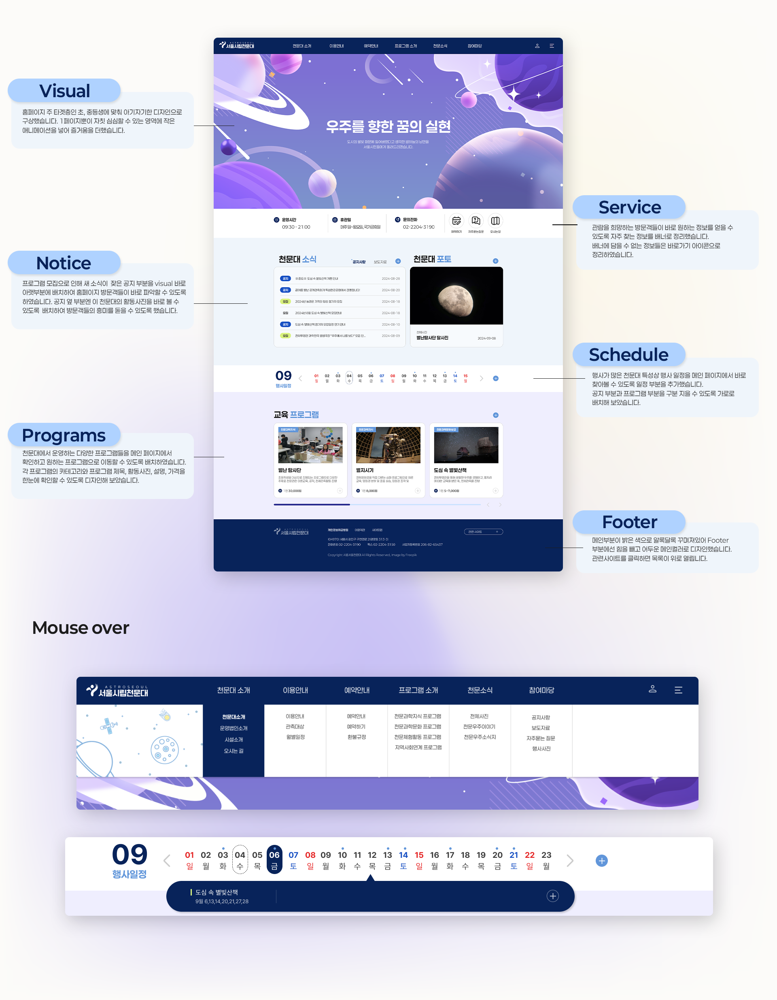

Mood board
about
서울시민들에게 별빛을 돌려드리고자 다양한 프로그램을 구상, 운영하고 있는 시립서울천문대는 그 취지와는 무색하게 운영하고있는 프로그램이 Visual pop up으로만 소개가 되고있으며 디자인 컨셉이 제대로 잡혀있지 않아 조잡해보이며 예약페이지로 가는 길이 복잡해 쉽사리 예약하기 힘든 홈페이지 모습을 하고 있습니다. 이에 한눈에 정보를 파악하기 쉽게 디자인을 통일하고 프로그램 소개와 함께 예약을 할 수 있도록 개편하였습니다.
Typography
- Basic 페이퍼로지 Paperlogy Regular 페이퍼로지 Paperlogy Bold
Color
-
Main
#08235A , #6196DA
-
Sub
#D9F27E , #EFEEFE , #1750C3
- #08235A
- #6196DA
- #D9F27E
- #EFEEFE #1750C3

Mobile web
320 해상도까지 반응형을 지원합니다.
PC버전의 디자인 컨셉은 그대로 가져가되, 컨텐츠가 너무 길어지는 부분은
구성을 편집해 모바일 사용이 편안해지도록 퍼블리싱을 하였습니다.